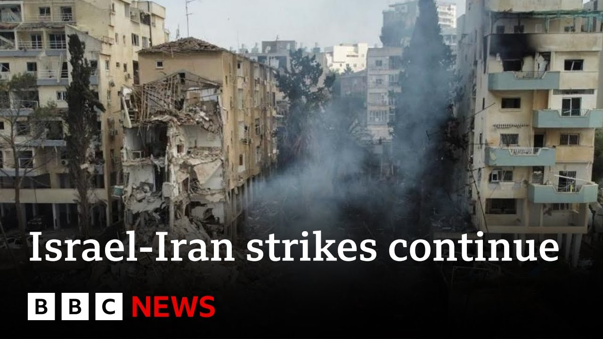

【伊朗导弹袭击以色列造成多人伤亡，以军空袭德黑兰石油设施 | BBC新闻】
Summary: A new round of attacks and counterattacks has erupted in the Middle East, with overnight clashes between Israel and Iran. Iran launched two waves of missiles at Israel, resulting in at least eight deaths and over 200 injuries. In response, the Israeli military carried out airstrikes on Iran's capital, Tehran, claiming to have targeted nuclear facilities and hit the Shalan oil depot in the north. Iranian state television reported a large-scale drone attack against Israel, with explosions heard in multiple areas across the country. The UK announced it is sending additional fighter jets to the Middle East, while Trump warned Iran that any attack on the U.S. would be met with a strong retaliation.
摘要： 中东地区爆发新一轮袭击与反击，以色列与伊朗夜间交火。伊朗向以色列发射两波导弹，造成至少8人死亡、200多人受伤。以军则空袭伊朗首都德黑兰，称打击了核设施目标并击中北部沙兰油库。伊朗国家电视台称对以发动大规模无人机袭击，以色列多地听到爆炸声。英国宣布增派战机至中东，特朗普警告伊朗若攻击美国将遭强力回击。

⏱️ Estimated Reading Time: 17 min
📚 六级生词 📚 雅思生词 📚 托福生词 📚 专八生词 📚 SAT生词 📚 考研生词 📚 GRE生词 📚 高考生词
Begin in the Middle East where there have been fresh strikes and counter strikes overnight between Israel and Iran.
中东地区爆发新一轮袭击与反击，以色列与伊朗夜间交火。
Now, in a moment, I'll show you some of the latest pictures that we've had into the BBC.
稍后将为您展示BBC收到的最新画面。
But first, let me take you through the latest updates.
首先带来最新进展。
This hour, Iran fired two waves of missiles overnight towards Israel.
伊朗夜间向以色列发射两波导弹。
At least eight people have been killed.
至少8人死亡。
More than 200 others have been injured.
200多人受伤。
Meanwhile, Israel launched attacks on the Iranian capital, Thran.
同时以军空袭伊朗首都德黑兰。
It says it struck targets linked to Iran's nuclear program and it hit the Shiran oil depot in the north of the country.
以方称打击了伊朗核设施目标并击中北部沙兰油库。
Well, let me show you some of the pictures that we've had of that fire in from Iran.
现在展示伊朗油库起火的画面。
And you can see that it is raging at that Sharan oil depot.
可见沙兰油库火势猛烈。
Now, Iran's oil ministry says Israeli strikes targeted the depo and a fuel tank in Thran, adding that the situation is under control.
伊朗石油部称以军袭击了德黑兰油库和燃料罐，但局势已受控。
Now, the oil ministry also said that two major gas fields in a southern province were also attacked.
该部还称南部两处主要气田遇袭。
The Israel Defense Forces said it carried out air attacks on Thran, targeting buildings linked to Iran's nuclear program, including the Defense Ministry.
以色列国防军称空袭了德黑兰与核计划相关的建筑，包括国防部。
The strike on the oil depot appears to be the first attack on Iran's energy infrastructure.
此次油库遇袭似是伊朗能源设施首次遭打击。
Iran, meanwhile, carried out another round of strikes on Israel with the country's state TV saying it had launched a wide drone attack while loud explosions were heard across Israel.
伊朗国家电视台称对以发动大规模无人机袭击，以色列多地听到爆炸声。
These pictures are of the missiles and the defense systems in operation over Tel Aviv.
画面显示特拉维夫上空的导弹与防御系统运作。
Millions of people will have headed to their shelters after getting alerts.
数百万人收到警报后进入避难所。
Now officials said that the IIAF was operating to intercept and strike when necessary to eliminate the threat but added that the defense is not hermetic.
官员称以军正拦截打击威胁，但防御并非密不透风。
Now we are getting reports of all the casualties that are coming in.
正陆续收到伤亡报告。
Now Israel's emergency service MDA released these pictures of attending the scene of one of the strikes in a neighborhood in the northern city of Tamra.
以色列急救机构MDA发布北部城市塔姆拉遭袭现场画面。
Now Israeli media is reporting that at least four people were killed there.
以媒称当地至少4人死亡。
You can see the images uh showing that rescue operation and the damage to the buildings from that Iranian missile strike.
画面显示救援行动及建筑遭伊朗导弹破坏的情况。
Meanwhile, four people were killed in Bat Yam.
巴特亚姆市另有4人遇难。
That is a city in the Tel Aviv metropolitan area.
该市位于特拉维夫都会区。
Now, these pictures show the aftermath of the Iranian strike there.
这些是当地遭袭后的画面。
A building really appears to have been taken a direct hit by a missile.
一栋建筑显然被导弹直接击中。
First responders of course scrambled to the scene looking through the debris to rescue the wounded.
救援人员赶赴现场搜救伤者。
Now we know that four people died.
目前已确认4人死亡。
As I said they were a woman in her 60s, a woman in her 80s, a boy around 10 years old and also a young girl.
包括一名60余岁女性、80余岁女性、10岁左右男孩及一名幼女。
Now emergency services say 99 others were injured in this area.
急救部门称该地区另有99人受伤。
Four of them are in a serious condition.
其中4人伤势严重。
You can see people trying to bring their pets out of that debris as well.
可见民众正从废墟中救出宠物。
Let me take you to the live pictures now.
现在切换到实时画面。
Um, and this is the scene there.
这是当地现场。
And you can see that those buildings are uh been destroyed in areas.
可见多栋建筑被毁。
The IDF is continuing its search and rescue mission at the site.
以军仍在现场开展搜救。
Now, local media reports say that around 20 people are currently missing.
当地媒体称约20人失踪。
Now earlier that was that number was around 35.
此前失踪人数约为35人。
Of course as we were mentioning this is a fluid situation.
当前局势持续变化。
So as people get accounted for it will take the emergency services a little time to know exactly um how many people are missing in this debris uh that you can see.
救援部门需时间确认废墟中的确切失踪人数。
Um I can also take you to the live pictures across Tel Aviv.
现在切换至特拉维夫实时画面。
Uh we're also getting a report uh from the Reuters news agency uh saying that Yemen's Houthies say they targeted Israel with several ballistic missiles in the last 24 hours in coordination with Iran.
路透社报道称也门胡塞武装宣布过去24小时与伊朗协调向以发射多枚弹道导弹。
So that just coming in on the Reuters news agency.
此为路透社最新消息。
Meanwhile, the UK Prime Minister Sakir Starama says more British military jets are being sent to the region, including typhoons and air-to-air refuelers.
英国首相斯塔默称正增派台风战机及空中加油机赴中东。
The Prime Minister told reporters he's neither ruling in nor out the prospect of British jets helping Israel to respond to Iran's strikes, as happened in April and October last year.
首相表示不排除英军战机协助以方反击伊朗的可能性，类似去年4月及10月的情况。
Iran has told Britain, France, and America that it'll target their ships and bases in the region if they support Israel.
伊朗警告英法美若支持以色列将打击其在该地区的舰船与基地。
Well, in the last hour, President Trump has reacted to the latest strikes on Iran by Israel.
特朗普就以军最新袭伊行动表态。
He posted this message on Truth Social.
他在Truth Social发文称：
I'll read it to you now.
内容如下：
The US had nothing to do with the attack on Iran tonight.
美国与今夜袭伊行动无关。
If we are attacked in any way, shape, or form by Iran, the full strength and might of the US armed forces will come down on you at levels never seen before.
若伊朗以任何形式攻击美国，美军将以空前力度回击。
However, we can easily get a deal done between Iran and Israel and end this bloody conflict.
但美方可促成伊以协议终结冲突。
So, that the latest post from President Trump.
此为特朗普最新表态。
Let's go live to our Middle East correspondent, Hugo Basha, who is uh in Jerusalem for us.
现在连线耶路撒冷的中东记者雨果·巴沙。
And Hugo, just bring us up to date on the injuries and casualties from those overnight strikes.
请介绍夜间袭击的最新伤亡情况。
Yeah, Nikki.
好的。
So it was a another long night of attacks.
这是伊朗对以发动袭击的第二夜。
The second night of Iranian attacks across Israel.
全国响起警报提示导弹威胁。
We had sirens uh across the country and uh obviously you know alerting people of the uh threat coming from those missiles.
首波袭击中导弹击中北部巴勒斯坦裔聚居城镇塔姆拉的居民区。
So in the first wave of attacks a missile hit a residential area in the town of Tamra which is a mainly Palestinian town uh in the north of the country.
房屋部分坍塌致至少4人死亡。
A house partially collapsed.
遇难者疑似同家族女性。
At least four people were killed there and it seems that all the victims are women from the same family.
数小时后第二波袭击来袭。
Then hours later there was a second wave of attacks.
耶路撒冷听到巨大爆炸声。
We heard loud explosions here in Jerusalem as the air defense systems tried to intercept those missiles and a missile hit a residential building uh in the city of Batyam uh in the central part of Israel.
防空系统试图拦截导弹，巴特亚姆市居民楼被击中。
There's a lot of destruction there, a lot of damage.
当地损毁严重。
Uh and this morning emergency services are still searching for those people who are still missing.
今晨救援仍在搜寻失踪者。
Uh the authorities are saying that more than 30 people are still missing there after this attack and again a lot of destruction there uh as this residential area was hit by a missile.
当局称袭击后超30人失踪，居民区遭袭致大面积破坏。
Now this followed you know more Israeli air strikes uh on Iran.
此前以军对伊朗发动更多空袭。
Uh the targets included uh the uh defense ministry headquarters in Thran and also sites that Israel says are linked to the country's uh nuclear program uh including an oil depo in what appears to be the first uh strike on Iran's energy infrastructure.
目标包括德黑兰国防部总部及以方所称核设施，其中油库遇袭似是首次打击伊能源设施。
We haven't had an update from the Iranian authorities yet in terms of casualties, but yesterday an Iranian official said more than 70 people had already been killed as a result of these Israeli air strikes.
尚未收到伊方最新伤亡报告，但昨日伊官员称以军空袭已致超70人死亡。
just seen that the president Hersog saying that it was a very sad and difficult morning.
以色列总统赫尔佐格称这是悲痛艰难的早晨。
How is the fact that across Israel now they are seeing those pictures on their televisions of those buildings that have been destroyed?
民众通过电视看到建筑被毁画面的影响如何？
I know you went down to the scene of one of them yesterday.
您昨日曾前往一处现场。
What impact is that going to have on Israelis?
这对以色列民众有何影响？
Well, I think you know people here were I think expecting that this could happen because the Israeli authorities since the beginning of this uh campaign on Friday were alerting people that they were expecting uh a huge Iranian response with missiles and drones and they were telling the people to stay alert to follow the uh instructions by the authorities to seek shelter uh you know during those attacks.
当地民众对此早有预期，因为以色列当局自周五行动开始就警告称，伊朗可能以导弹和无人机大规模反击，并呼吁民众保持警惕，遵循当局指示在袭击期间寻求庇护。
Uh again I think you know this is uh the kind of uh the impact that uh this uh is going to have on the ground on on people in Israel as this campaign continues and the indications from the Israeli authorities are that this is going to be a prolonged campaign.
随着行动持续，这将给以色列民众带来实际影响，以方迹象表明这将是一场长期行动。
We're talking about weeks uh not days.
我们谈论的是数周而非数天。
And last night the Israeli Prime Minister Benjamin Netanyahu said that the attacks that have happened so far, the Israeli attacks were just the beginning were nothing compared with what would come next in Iran.
以色列总理内塔尼亚胡昨夜表示，目前的以方袭击仅是开端，与后续对伊朗行动相比微不足道。
So an indication that this is just the beginning.
这表明一切才刚刚开始。
Hugo Basha live in Jerusalem.
这里是驻耶路撒冷的雨果·巴沙。
Thank you.
谢谢。
Well, let's speak now to Benzala.
现在请听本萨拉的看法。
He's a senior lecturer in politics and international relations at MES University and joins me live from Melbourne.
他是MES大学政治与国际关系高级讲师，现从墨尔本连线。
Thank you very much for your time on BBC News.
感谢您接受BBC新闻采访。
I wondered if I could pick up on one of the points that Hugo uh made there, the fact that in these latest strikes, Israel appears to be targeting the fuel operation uh oil depots and other areas in Iran.
我想追问雨果提到的观点：以军最新空袭似乎针对伊朗燃料设施、石油仓库等目标。
That's right.
确实如此。
They've really now broadened out the attacks beyond just what was the initial stuff on the actual nuclear program itself, hitting actual sites and then the targeted assassinations of key personnel in the military and in the nuclear program.
以方已扩大打击范围，不再局限于核计划本身，转而攻击实体设施及军事与核项目关键人员。
This is now quite a bit wider.
当前范围显著扩大。
So, we've had attacks uh on oil and gas fields, also on airports.
包括对油气田和机场的袭击。
This appears to be trying to limit Iran's ability to respond.
这似乎是为削弱伊朗反击能力。
The Israelis always knew the Iranians would respond.
以色列深知伊朗必将报复。
would retaliate and they're trying to blunt that in any way they can.
正竭力削弱其报复力度。
Do we have any idea yet of the scale of the damage that has been done across Iran and in particular at those nuclear sites that you mentioned?
目前能否评估伊朗境内尤其是核设施的受损程度？
So, it is still early days and it's probably going to take some time before we have a a very accurate picture.
现在下结论为时尚早，需更长时间获取准确信息。
Um, but we have some idea.
但已有初步判断。
I was just looking at some of the um updated satellite images this morning and these were mainly of um the the Natan's enrichment facility which has both an underground and an above ground uh aspect to it.
今晨查看最新卫星图像显示，纳坦兹浓缩设施（含地下与地上部分）受损严重。
We don't really know anything about the damage to the underground facility but the above ground facility appears to have been very extensively damaged.
地下设施情况不明，但地上部分已遭大面积破坏。
There are buildings that are just no longer there.
部分建筑完全消失。
There are structures that are completely obliterated.
某些结构体被彻底摧毁。
This will really have put the program back by some margin.
这将显著延缓伊朗核计划进程。
And what do you think the impact is going to be on normal Iranians?
您认为对普通伊朗民众有何影响？
The fact that oil dep depots have been hit, that might also have an impact on the fact that they could even get petrol and and and other supplies.
石油设施遇袭可能影响汽油等物资供应。
That's right.
确实如此。
The impact will go well beyond just the military's ability to move assets around and respond to these Israeli attacks.
影响远超军事资产调度与反击能力范畴。
At some point there will be a a this will be felt fairly widely in the Iranian population.
最终将广泛波及伊朗民众。
That may also be part of Israel's calculation here.
这或许正是以色列的战略考量。
It does appear certainly as part of the official statements.
官方声明已显露端倪。
Even uh Benjamin Netanyahu's uh press conference that he gave when the initial attack was underway.
内塔尼亚胡在首轮袭击时的记者会即有所暗示。
He has been making statements and other officials have been making statements that are calling for the Iranian population to rise up against um uh their own government.
他及其他官员持续呼吁伊朗民众反抗现政权。
And so this may may well be part of the Israeli calculation.
这很可能属于以色列整体战略。
They're trying to make life harder for the Iranian population in the short term and make people reflect on whether their government is actually able to secure their interests and in their best interests to to remain in place.
试图短期内加剧民众生活困境，促使人们反思现政府是否真正维护其利益。
And we've had uh this post from Donald Trump saying the US had nothing to do with the attacks on Iran tonight.
特朗普发帖称美国与今夜袭伊行动无关。
If we're attacked in any way, shape, or form, the full strength and might of the US armed forces will come down on you.
若美国遭任何形式攻击，将全力军事回击。
Also saying a deal can be done.
并称仍可达成协议。
Where do you think this goes next?
您认为局势将如何发展？
Uh extremely difficult to say, of course.
当然极难预测。
I know that's the the the disappointing answer, but everyone really is uh watching with baited breath.
虽令人失望，但各方确实屏息观望。
Uh I think where it it probably goes at least in the short term over the next few days is further attacks from the Israelis.
短期内以方可能发动更多袭击。
Clearly they're doing this in stages.
显然他们在分阶段推进。
Um there were a number of nuclear sites particularly that at Fordo and Isvahan that weren't hit in the initial wave of attacks and have been since.
福尔多与伊斯法罕等核设施未在首轮遭袭但后续被打击。
So I expect more attacks from Israel.
故预计以方将有进一步行动。
There will certainly be more retaliatory attacks from Iran.
伊朗必将再度报复。
The key question will be whether any of those attacks go a little further and hit non-Israeli uh targets.
关键在于会否波及非以色列目标。
So hit American or perhaps even British interests in the region.
例如攻击美英在地区利益。
And that will depend on the degree to which Iran perceives US and other western states as actually facilitating these attacks on the part of Israel.
这取决于伊朗对美西方协助以方行动的认定程度。
If those western sites are attacked, then I think we should expect a much wider uh escalation of the conflict.
若西方目标遇袭，冲突恐大幅升级。
Unfortunately, Angela, thank you very much for your time.
感谢您的时间，安吉拉。